Edge nie gwarantuje jednej drogi.
Każdy słupek pokazuje, jak często symulacja kończyła się w danym przedziale. Im szerszy rozkład, tym większej odporności psychicznej i kapitałowej wymaga strategia.

Najważniejsze liczby z 5000 alternatywnych przebiegów tej samej strategii.
Szansa zaliczenia, ryzyko naruszenia limitów i typowy czas rozstrzygnięcia.
Każdy słupek pokazuje, jak często symulacja kończyła się w danym przedziale. Im szerszy rozkład, tym większej odporności psychicznej i kapitałowej wymaga strategia.
Automatyczne ograniczanie ryzyka zmniejsza ekspozycję podczas obsunięcia, ale spowalnia późniejsze odbicie.
Risk Lab pokazuje, że dobry trading nie polega wyłącznie na przewidywaniu kierunku, lecz na kontrolowaniu konsekwencji każdej decyzji.
Dodatnia expectancy nie oznacza, że każda ścieżka zakończy się zyskiem. Monte Carlo pokazuje rozrzut możliwych sekwencji wyników.
Nawet dobra strategia może mieć długie serie strat i głębokie obsunięcia.
W challenge'u nie liczy się tylko dojście do targetu. Liczy się dojście do targetu przed naruszeniem daily lub max drawdownu.
Zwiększenie ryzyka na trade może mocno przyspieszyć wzrost, ale jeszcze mocniej zwiększyć ryzyko faila.
Risk Lab pokazuje możliwe scenariusze na podstawie wpisanych założeń. Nie przewiduje przyszłych wyników.
Ostrzeżenie przed ryzykiem: Kontrakty CFD są złożonymi instrumentami i wiążą się z wysokim ryzykiem szybkiej utraty pieniędzy z powodu dźwigni finansowej. 74% rachunków inwestorów detalicznych traci pieniądze podczas handlu kontraktami CFD z Tickmill Europe Ltd. Zastanów się, czy rozumiesz, jak działają kontrakty CFD, i czy możesz pozwolić sobie na wysokie ryzyko utraty pieniędzy.